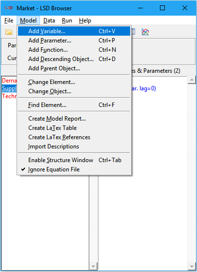
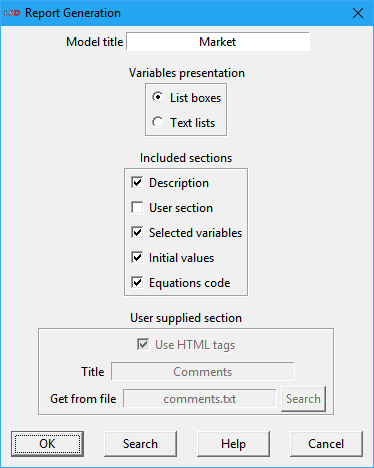

LSD Browser – Menu Model
|
 |
1. Add elements |
This menu provides commands to create, modify, explore and document the LSD model structure. The tools are organized in five groups: adding, changing and finding model elements, document the model, and setting model-related options.
Please check also this tutorial with hints on how to design your model structure.
Operations for adding Objects, Variables, Parameters and Functions to the model structure:
Shortcut: Ctrl+V.
Insert a new Variable in the current Object type selected on the LSD Browser. A pop-up window will request a unique name and the maximum number of lags for the Variable. An optional description text can also be provided to be used in the model documentation.
The user can choose a name from the drop-down list of unset Equation names, type the first letters of the desired (unset) name, or enter the full desired Variable name. Both the drop-down list and the auto-fill feature propose only names which are associated to an Equation in the equation file, and are not yet present in the model structure. It is necessary that a name-matching Equation exists in the equation file. If the desired name is not available in the list, it is still possible to type any valid Equation name. Any existing description text (comments) existing in the equation file(s) is used to fill the Description field automatically.
Names in LSD are case-sensitive, should only use alphanumeric characters and the underscore ‘_’, and cannot start with a number. All other symbol or blank characters, including space, tab and new line are forbidden. Maximum name length is 99 characters. See more details here.
The maximum number of lags which can be manually set is 99, by clicking on the arrows or typing the desired value. If more lags are required, the user may simply turn on the Save flag for the Variable (see how here). When this flag is on, the modeler has access to an unlimited number of lagged values. When lags are requested, the user can immediately initialize the required value(s) by pressing the Initial Values button. The required initial value for each lag is asked in sequence, starting from the first lag (t = 0). Otherwise, if the user presses OK, the initial value(s) is (are) not set but it (they) must still be defined before the simulation is run.
Shortcut: Ctrl+P.
Insert a new Parameter in the current Object type selected on the LSD Browser. A pop-up window will request a unique name for the Parameter. An optional description text can also be provided to be used in the model documentation.
The user can choose a name from the drop-down list of unset Parameters, type the first letters of the desired (unset) name, or enter the complete Parameter name. Both the drop-down list and the auto-fill feature propose only Parameter names which are used at least in one Equation in the equation file, and are not yet present in the model structure. If the desired name is not available in the list, it is still possible to type any valid Parameter name.
Names in LSD are case-sensitive, should only use alphanumeric characters and the underscore ‘_’, and cannot start with a number. All other symbol or blank characters, including space, tab and new line are forbidden. Maximum name length is 99 characters. See more details here.
As all Parameter must be initialized, the user can immediately set the required value by pressing the Initial Values button. Otherwise, if the user presses OK, the initial value is not set but it must still be defined before the simulation is run.
Shortcut: Ctrl+N.
Insert a new Function in the current Object type selected on the LSD Browser. A pop-up window will request a unique name for the Function. An optional description text can also be provided to be used in the model documentation.
The user can choose a name from the drop-down list of unset Equation names, type the first letters of the desired (unset) name, or enter the full desired Function name. Both the drop-down list and the auto-fill feature propose only names which are associated to an Equation in the equation file, and are not yet present in the model structure. It is necessary that a name-matching Equation exists in the equation file. If the desired name is not available in the list, it is still possible to type any valid Equation name. Any existing description text (comments) existing in the equation file(s) is used to fill the Description field automatically.
Names in LSD are case-sensitive, should only use alphanumeric characters and the underscore ‘_’, and cannot start with a number. All other symbol or blank characters, including space, tab and new line are forbidden. Maximum name length is 99 characters. See more details here.
Shortcut: Ctrl+D.
Insert a new descending Object in the current Object type selected on the LSD Browser. A pop-up window will request a unique name for the Object. An optional description text can also be provided to be used in the model documentation.
The user can choose a name from the drop-down list of unset Object names, type the first letters of the desired (unset) name, or enter the full desired Object name. Both the drop-down list and the auto-fill feature propose only names which are explicitly used in LSD Macros in the equation file, and are not yet present in the model structure. If the desired name is not available in the list, it is still possible to type any valid Object name.
The names in LSD are case-sensitive and should only use alphanumeric characters and the underscore ‘_’. All other symbol or blank characters, including space, tab and new line are forbidden. Maximum name length is 99 characters. See more details here.
Operations for modifying, searching and sorting Objects, Variables, Parameters and Functions in the existing model structure:
Shortcut: Enter on the desired Element.
Edit the name, properties, location, option flags, and description of Variable, Parameter and Function elements, as well access additional information on those and modify their initial and sensitivity analysis numerical values. Also allow deleting the element. See the Change Element window details here.
Shortcut: Enter on the desired Object.
Edit the name, option-flags, and description of Objects, as well modify their number of instances. Also allow moving or deleting the Object. Check the details in the Change Object window here.
Shortcuts: Ctrl+F or click the magnifying glass icon on the tool bar.
Search for a Variable, Parameter or Function in the model. After a successful search, the Browser will move the current Object the one containing the found element, and this element will be selected.
Note that the Find Element window is endowed with auto-completion: while you type, the entry box proposes the first element with the typed initial letters, if any.
Sort the elements in the current active list box, either the Descending Objects or the Variables and Parameters list. The order of the elements in the list boxes may be important for helping LSD to disambiguate the order of evaluation of the Variables (see more details here). Four options are available in the submenu:
· Ascending (alphabetic only) (shortcut: F3): organize elements is ascending alphabetical order, regardless of the element type.
· Descending (alphabetic only) (shortcut: F4): organize elements is descending alphabetical order, regardless of the element type.
· Ascending (parameters first) (shortcut: Shift+F3): organize elements is ascending alphabetical order arranged into groups according to the element type: (1) Parameters, (2) Functions, (3) Variables. Available only for the Variables and Parameters list box.
· Descending (parameters first) (shortcut: Shift+F4): organize elements is descending alphabetical order arranged into groups according to the element type: (1) Parameters, (2) Functions, (3) Variables. Available only for the Variables and Parameters list box.
· Ascending (variables first) (shortcut: Ctrl+F3): organize elements is ascending alphabetical order arranged into groups according to the element type: (1) Variables, (2) Functions, (3) Parameters. Available only for the Variables and Parameters list box.
· Descending (variables first) (shortcut: Ctrl+F4): organize elements is descending alphabetical order arranged into groups according to the element type: (1) Variables, (2) Functions, (3) Parameters. Available only for the Variables and Parameters list box.
Manual sorting of individual elements is also possible using Ctrl+Up / Ctrl+Down keys or Move Down / Move Up context menu (right click) options on the element to be moved up or down in the list boxes (see here for details).
Tools to generate model reports in HTML and LaTex formats:
Generate the HTML model report and present it in the configured web browser. If the browser is already open, the help page may show as an additional window or tab, according to the web browser configuration.
The model report is the most efficient way to understand and present the model structure, equation file and initial values of an LSD model. It is composed by several sections listing the elements of the model (Objects, Variables, Parameters and Functions) including also the very code of the model Equations. It specifies which elements are used in every Equation, and in which Equations each element it used.
The generation of the model report is mostly automatic and the user needs only to choose among some options.

The available options are:
· Model title: By default, the current configuration name is used.
· Variables presentation: The report contains lists of Variables and Parameters for the whole model and for each object, separately. To hold the lists it is possible to use shorter scrolling List boxes (best on screen), or longer Text lists (best for printing).
· Included sections: The user can choose which sections to include. It is possible to add an optional a user supplied section, provided as a pure text or HTML file (the corresponding checkbox must be marked accordingly).
· User supplied section: This part of the Report Generation window is enabled if the User section checkbox is selected (see above). It allows the user to add a user-defined section to the report, composed by the chosen title and the contents from a text file provided by the user.
Optionally, the user can reload a previously generated HTML model report, using the Search button.
Create a LaTex file containing formatted tables presenting the model structure, the details about every Object, Variable, Parameter and Function, the relevant elements to observe and to initialize, and the initial values of Parameters and lagged Variables. The LaTex file is named table_XXXX.tex, where XXXX is the name of the current model configuration and is saved in the model home subdirectory. The file name and subdirectory are also presented in the Log window.
The LaTex tables are formatted as a single document, ready to be typeset. The user is free to use just the code for the tables she needs in her own LaTex documents.
Create a LaTex file containing labelled text references presenting the model structure, the details about every Object, Variable, Parameter and Function, and the relevant elements to observe and to initialize. The LaTex file is named href_XXXX.tex, where XXXX is the name of the current model configuration and is saved in the model home subdirectory. The file name and subdirectory are also presented in the Log window.
The LaTex references are formatted as a single document, ready to be typeset. The user is free to use just the code for the references she needs in her own LaTex documents. Each Object, Variable or Parameter referenced can be directly linked by its name (LSD creates all labels automatically). Please note that the same element may be referenced more than one time using the same label. The user must select the appropriate references among the ones provided by LSD to make sure her links work as expected.
Replace the model Variables’ descriptions with the comments present in the respective Equations code in the equation file. LSD collects the comment lines included at the beginning of the Variable Equation code. Please check here about the details on the model documentation.
This option should be used with care, since it replaces any current descriptions present in the Variables. Generally, when the equation file is fairly well written, the user may generate the model documentation with little effort by mainly reusing the descriptions already included in the code.
Options to control model presentation and processing:
Shortcuts: Ctrl+Tab or click the hierarchical structure icon on the tool bar.
Toggle option to control the presentation of the LSD Model Structure. The presentation of this window is optional. Closing the Model Structure window does not affect LSD operation except for the shortcuts it provides.
When this toggle option is checked off (the default is on), the browser compares the current Equations in the equation file, the ones effectively used for compiling the LSD model program, with those stored in the model configuration file. If there is a difference, a warning message appears as the model configuration (i.e., names of the Objects, Variables, etc.) needs to be compatible with the stored code for the Equations.
The equations in the configuration file are saved when the configuration is first created or, if applicable, when a new equation file is manually uploaded by the user.
This option is used only to properly track changes to a model and does not affect the simulation run. It is used to keep aligned the development of the Equations code and that of the LSD model configurations.